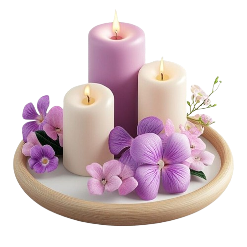
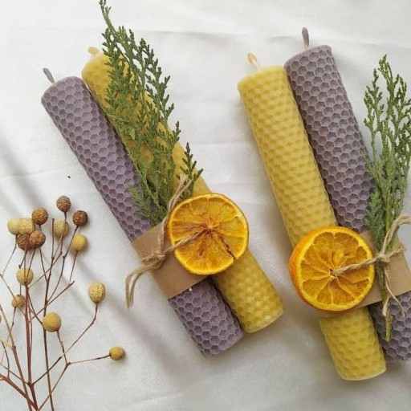

فروشگاه شمع نورا ما با هدف ارائه بهترین شمع های طبیعی و ارگانیک تأسیس شده است. ما به دنبال این هستیم که تجربهای بینظیر از طعم و عطر قهوه را برای شما فراهم کنیم.
علاوه بر قهوه، ما همچنین مجموعهای از شمعهای دستساز و طبیعی را عرضه میکنیم. این شمعها با دقت و عشق تهیه شدهاند و میتوانند فضایی دلنشین و آرامشبخش را در خانه شما ایجاد کنند. شمعهای ما از مواد اولیه با کیفیت بالا ساخته شدهاند و در عطرهای مختلفی موجود هستند که هر کدام میتوانند حس و حال خاصی را به محیط شما ببخشند.

شرایط اضافه کردن مایه های رنگی به پارافین ؟
شاید شما هم یکی از داوطلبان رشته شمع ساز فنی و حرفه ای باشید ، مجموعه آزمونیکا با جمع آوری نزدیک به 100 سوال بسیار مهم و پر تکرار این رشته ، قبولی در آزمون را برای شما بسیار آسان نموده است .
تمامی سوالات این رشته کاملا استاندارد و منطبق با سرفصل های سازمان آموزش فنی و حرفه ای کشور می باشد ، همین حالا با ثبت نام در سایت می توانید به صورت رایگان در سری اول آزمون های این رشته شرکت کنید ، و همچنین با پرداخت مبلغ بسیار ناچیز تمامی سری سوالات رشته شمع ساز برای شما باز شده و می توانید به صورت همیشگی به سوالات و آزمون های این رشته دسترسی داشته باشید.
شاید شما هم یکی از داوطلبان رشته شمع ساز فنی و حرفه ای باشید ، مجموعه آزمونیکا با جمع آوری نزدیک به 100 سوال بسیار مهم و پر تکرار این رشته ، قبولی در آزمون را برای شما بسیار آسان نموده است .
تمامی سوالات این رشته کاملا استاندارد و منطبق با سرفصل های سازمان آموزش فنی و حرفه ای کشور می باشد ، همین حالا با ثبت نام در سایت می توانید به صورت رایگان در سری اول آزمون های این رشته شرکت کنید ، و همچنین با پرداخت مبلغ بسیار ناچیز تمامی سری سوالات رشته شمع ساز برای شما باز شده و می توانید به صورت همیشگی به سوالات و آزمون های این رشته دسترسی داشته باشید.
چه ماده ای باعث بدون اشک شدن پارافین می شود ؟
شاید شما هم یکی از داوطلبان رشته شمع ساز فنی و حرفه ای باشید ، مجموعه آزمونیکا با جمع آوری نزدیک به 100 سوال بسیار مهم و پر تکرار این رشته ، قبولی در آزمون را برای شما بسیار آسان نموده است .
تمامی سوالات این رشته کاملا استاندارد و منطبق با سرفصل های سازمان آموزش فنی و حرفه ای کشور می باشد ، همین حالا با ثبت نام در سایت می توانید به صورت رایگان در سری اول آزمون های این رشته شرکت کنید ، و همچنین با پرداخت مبلغ بسیار ناچیز تمامی سری سوالات رشته شمع ساز برای شما باز شده و می توانید به صورت همیشگی به سوالات و آزمون های این رشته دسترسی داشته باشید.
چه ماده ای باعث بهتر سوختن شمع می شود ؟
شاید شما هم یکی از داوطلبان رشته شمع ساز فنی و حرفه ای باشید ، مجموعه آزمونیکا با جمع آوری نزدیک به 100 سوال بسیار مهم و پر تکرار این رشته ، قبولی در آزمون را برای شما بسیار آسان نموده است .
تمامی سوالات این رشته کاملا استاندارد و منطبق با سرفصل های سازمان آموزش فنی و حرفه ای کشور می باشد ، همین حالا با ثبت نام در سایت می توانید به صورت رایگان در سری اول آزمون های این رشته شرکت کنید ، و همچنین با پرداخت مبلغ بسیار ناچیز تمامی سری سوالات رشته شمع ساز برای شما باز شده و می توانید به صورت همیشگی به سوالات و آزمون های این رشته دسترسی داشته باشید.
از چه نوع الیاف گیاهی بر روی شمع مي توان استفاده کرد؟
شاید شما هم یکی از داوطلبان رشته شمع ساز فنی و حرفه ای باشید ، مجموعه آزمونیکا با جمع آوری نزدیک به 100 سوال بسیار مهم و پر تکرار این رشته ، قبولی در آزمون را برای شما بسیار آسان نموده است .
تمامی سوالات این رشته کاملا استاندارد و منطبق با سرفصل های سازمان آموزش فنی و حرفه ای کشور می باشد ، همین حالا با ثبت نام در سایت می توانید به صورت رایگان در سری اول آزمون های این رشته شرکت کنید ، و همچنین با پرداخت مبلغ بسیار ناچیز تمامی سری سوالات رشته شمع ساز برای شما باز شده و می توانید به صورت همیشگی به سوالات و آزمون های این رشته دسترسی داشته باشید.
تیم ما
علی رضایی
مدیر عامل و بنیانگذار
سعید احمدی
کارشناس فروش و بازاریابی
سعید احمدی
کارشناس فروش و بازاریابی
تاریخچه ما
ما از سال 1390 در این صنعت فعالیت میکنیم و با تلاش و کوشش، به یکی از بهترین فروشگاههای قهوه تبدیل شدهایم. هر روز به دنبال بهبود کیفیت محصولات خود هستیم. هدف ما ارائه بهترین قهوهها به مشتریان عزیز است و با همکاری با تولیدکنندگان معتبر و استفاده از روشهای نوین، سعی داریم تجربهای بینظیر از نوشیدن قهوه را برای شما فراهم کنیم. ما به کیفیت و تازگی محصولات خود اهمیت میدهیم و تمام تلاش خود را میکنیم تا رضایت شما را جلب کنیم.

نظرات مشتریان
"قهوههای شما بهترین هستند! همیشه از خریدن آنها لذت میبرم."
"خدمات شما عالی است و قهوهها طعم فوقالعادهای دارند."
"تجربه خرید من از این فروشگاه بینظیر بود. حتماً دوباره برمیگردم!"